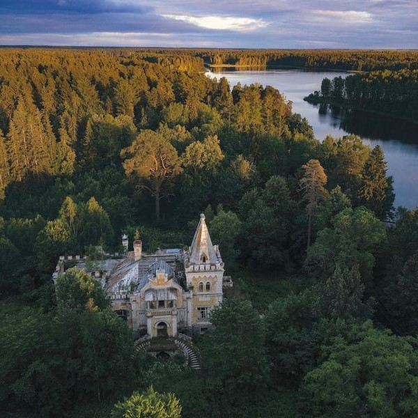
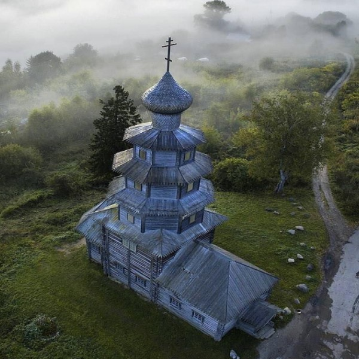
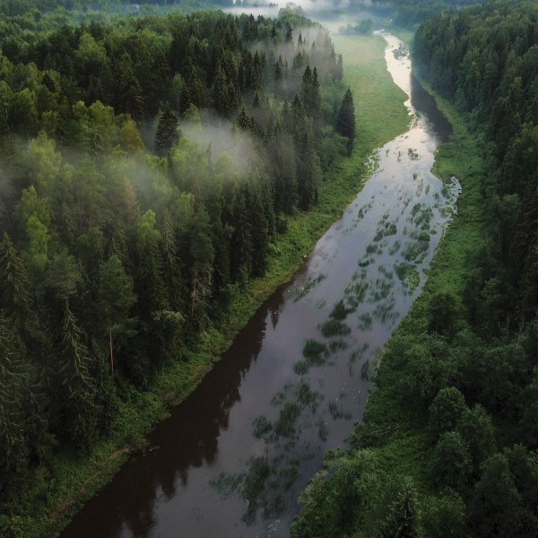
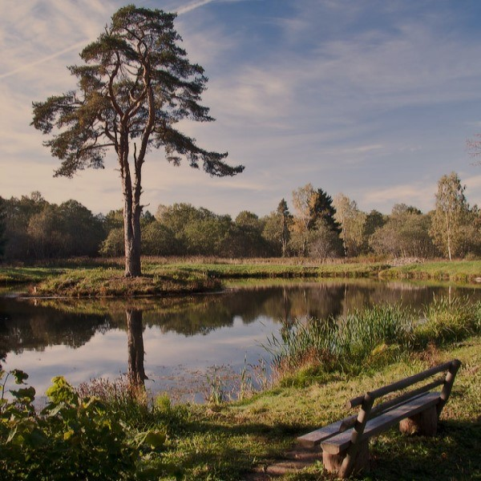

Регион на северо-западе России, край, где шумят реликтовые леса и плещутся неисчислимые реки и озера. Древние тверские земли – идеальное место для туристов, желающих убежать от шума и грязи больших городов и приблизиться к чистоте первозданной природы. Самые популярные природные объекты области известны далеко за ее пределами. Их названия нередко упоминаются в СМИ, исторически фильмах и книгах.
Тверская область
Вашему вниманию список-обзор достопримечательностей Тверской области,
которые
обязательно стоит посмотреть

усадьбы
усадьбы
В этом разделе можно узнать о сохранившихся усадьбах, в которых
обязательно нужно побывать и увидеть своими глазами.

церкви и соборы
церкви и соборы
Старинные и уникальные по архитектуре храмы на территории Тверской
области, которые максимально впечатляют.

озера и реки
озера и реки
Популярные туристические места для отдыха. Место, где можно стоять
правой ногой на одном волжском берегу, а левой – на другом.

интересные места
интересные места
Необычные и загадочные места, куда можно съездить, чтобы отдохнуть
душой и сделать красивые фотографии.